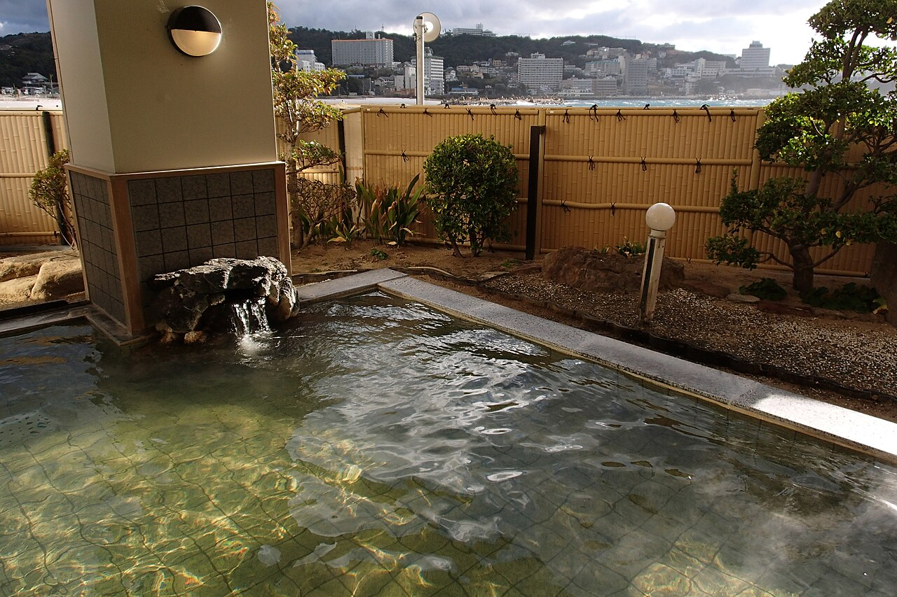

Compare the public baths
The prices and regular hours below come from Shirahama Town's facility pages, checked 19 November 2026. They are not live availability.
| Bath | Adult admission | Visitor hours | Regular closure |
|---|---|---|---|
| Saki-no-Yu (崎の湯) | ¥500 (age 3+) | Oct–Mar 08:00–17:00; Apr–Jun and Sep 08:00–18:00; Jul–Aug 07:00–19:00 | No fixed closure; maintenance possible |
| Muro-no-Yu (牟婁の湯) | ¥420 | 09:00–11:00; 14:00–21:30 | Tuesday |
| Shirara-yu (白良湯) | ¥420 | 09:00–11:00; 14:00–21:30 | Thursday |
At Muro-no-Yu and Shirara-yu, the 07:00–09:00 period is reserved for Shirahama residents. Last admission is 30 minutes before the end of each visitor session. For Saki-no-Yu, last admission is also 30 minutes before closing.
Which one should you choose?
Saki-no-Yu: for the ocean
The outdoor bath looks towards the Pacific. The town prohibits soap and shampoo because the bath water flows into the sea. Bring a towel or buy one at the facility. The town lists Yuzaki bus stop and a short walk.
Saki-no-Yu official hours and closures
Muro-no-Yu: for comparing hot springs
Two baths use different hot spring sources: Mabu-yu and Miyuki. This is a useful alternative when you want to explore bathing culture without relying on ocean conditions. The town lists a short walk from Yuzaki bus stop.
Muro-no-Yu official information
Shirara-yu: for a beach visit
The second-floor bath looks towards Shirarahama. It is particularly convenient if you are staying near the beach or want a short bathing stop after a coastal walk.
Shirara-yu official information
Before entering an onsen
Follow the posted instructions and wash before entering where facilities and rules allow. Do not put a towel into the bath, do not photograph other bathers, and check the facility's current tattoo arrangements directly. We have not verified tattoo policies for these three baths and do not imply access is guaranteed.
Bathing practices and private-bath options differ at hotels. Ask your accommodation about the rules and accessibility before booking.
Plan a day around your bath
For a morning visit, choose Saki-no-Yu or visit the other baths after 09:00. For a later arrival, Muro-no-Yu and Shirara-yu regularly have evening sessions, subject to the closure days above. Leave a margin for the last bus.
Read our winter onsen itinerary or two-day Shirahama route without a car.
Sources and updates
This independent guide is based on publicly available official and operator information, not a first-hand inspection. Confirm the latest dates, prices and service conditions before travel.